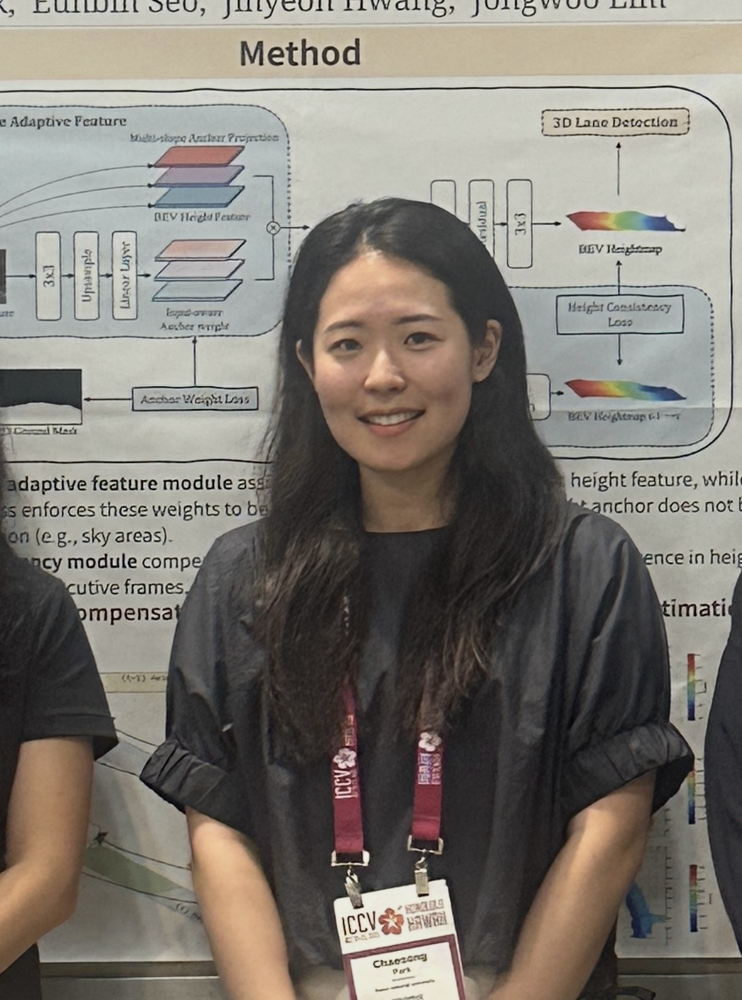

|
Chaesong Park I'm a Ph.D candidate at Robot Vision lab. in Seoul National University. |
 |
{kind=link}
ResearchI'm interested in computer vision, geometric deep learning and scene understanding on autonomous driving. |

|
SC-Lane: Slope-aware and Consistent Road Height Estimation Framework for 3D Lane Detection
Chaesong Park, Eunbin Seo, Jihyeon Hwang, Jongwoo Lim, ICCV, 2025 project page / arXiv A novel framework for 3D lane detection that introduces precise height estimation through slope-aware modeling and temporal consistency. |

|
HeightLane: BEV Heightmap guided 3D Lane Detection
Chaesong Park, Eunbin Seo, Jongwoo Lim, WACV, 2025 (Oral Presentation) project page / arXiv A novel approach for 3D lane detection using Bird's Eye View (BEV) heightmap guidance to improve accuracy and robustness in autonomous driving scenarios. |
|
Feel free to steal this website's source code. Do not scrape the HTML from this page itself, as it includes analytics tags that you do not want on your own website — use the github code instead. Also, consider using Leonid Keselman's Jekyll fork of this page. |